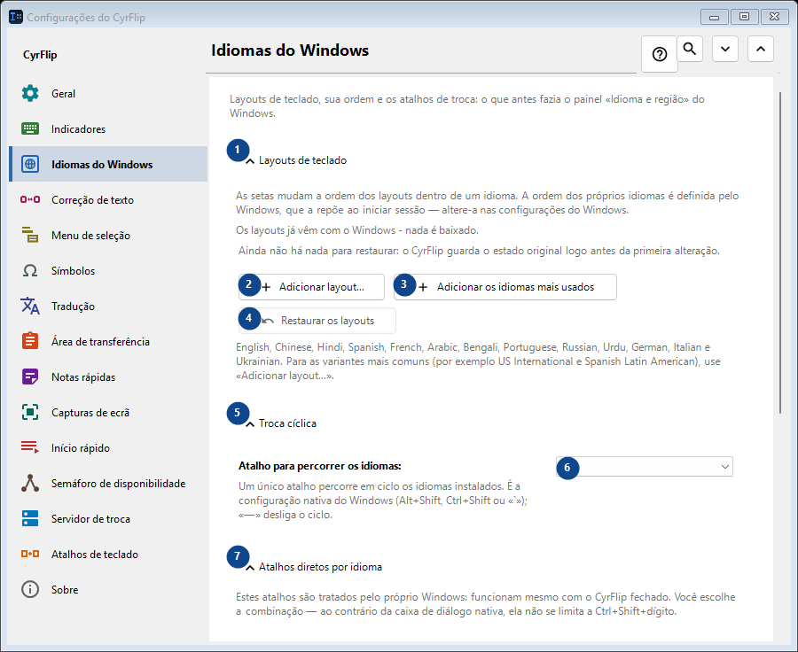
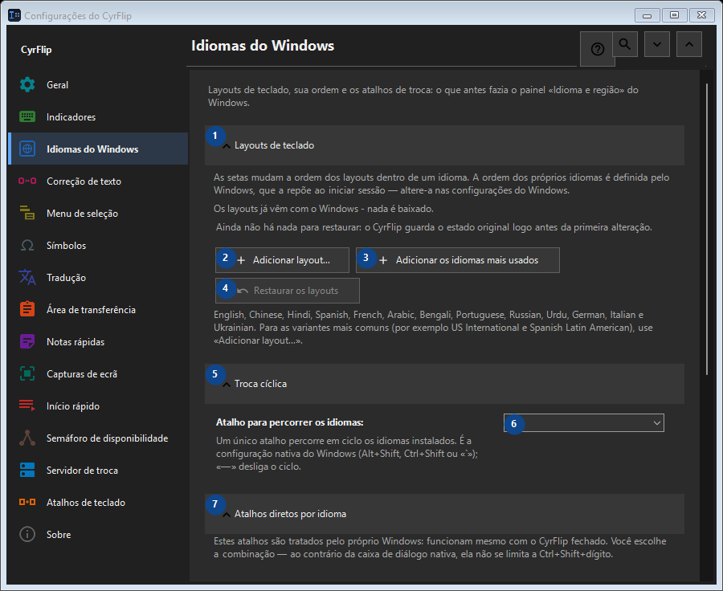

Idiomas do Windows
Para que serve
Layouts de teclado, sua ordem e os atalhos de troca: o que antes fazia o painel «Idioma e região» do Windows.


Ordem de utilização
As definições são aplicadas de imediato. Não existe uma ordem obrigatória; use os grupos abaixo.
Elementos
1. Layouts de teclado
Use este comando para a ação indicada. Leia qualquer confirmação antes de aceitar.
Os seus atalhos2. Adicionar layout...
Use este comando para a ação indicada. Leia qualquer confirmação antes de aceitar.
Os seus atalhos3. Adicionar os idiomas mais usados
Use este comando para a ação indicada. Leia qualquer confirmação antes de aceitar.
Os seus atalhos4. Restaurar os layouts
Ainda não há nada para restaurar: o CyrFlip guarda o estado original logo antes da primeira alteração. Este elemento não está disponível. Ative primeiro a função ou selecione uma entrada.
Os seus atalhos5. Troca cíclica
Use este comando para a ação indicada. Leia qualquer confirmação antes de aceitar.
Os seus atalhos6. Atalho para percorrer os idiomas
Escolha ou introduza o valor da etiqueta adjacente. Verifique-o antes de continuar.
Os seus atalhos7. Atalhos diretos por idioma
Use este comando para a ação indicada. Leia qualquer confirmação antes de aceitar.
Os seus atalhos8. Atribuir... - English (United States) - US
Use este comando para a ação indicada. Leia qualquer confirmação antes de aceitar.
Os seus atalhos9. Limpar - English (United States) - US
Use este comando para a ação indicada. Leia qualquer confirmação antes de aceitar. Este elemento não está disponível. Ative primeiro a função ou selecione uma entrada.
Os seus atalhos10. Atribuir... - русский (Россия) - Russian
Use este comando para a ação indicada. Leia qualquer confirmação antes de aceitar.
Os seus atalhos11. Limpar - русский (Россия) - Russian
Use este comando para a ação indicada. Leia qualquer confirmação antes de aceitar. Este elemento não está disponível. Ative primeiro a função ou selecione uma entrada.
Os seus atalhos12. Restaurar os atalhos
Ainda não há nada para restaurar: o CyrFlip guarda o estado original logo antes da primeira alteração. Este elemento não está disponível. Ative primeiro a função ou selecione uma entrada.
Os seus atalhos13. Configurações do Windows
Use este comando para a ação indicada. Leia qualquer confirmação antes de aceitar.
Os seus atalhos14. Abrir as configurações do Windows
Abre as configurações do Windows, onde se instala um idioma de exibição (a tradução do próprio Windows).
Os seus atalhos